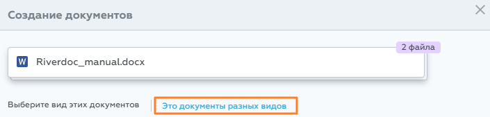

Важно. На папку, в которой планируете создать документ, должно быть право доступа как минимум "Перезапись версий" (Write).
Важно. На папку, в которой планируете создать документ, должно быть право доступа как минимум "Перезапись версий" (Write).
Чтобы создать несколько документов одного вида:
1.Запустите создание одним из способов:
a.Из любого раздела нажмите  , далее прикрепите файлы с компьютера;
, далее прикрепите файлы с компьютера;
b. перетащите файлы с компьютера в подраздел Документы (в любую видимую папку, в которой хотите создать документ).
Система проверит ваши права доступа на папку назначения и, если прав хватает, откроет окно откроется окно выбора вида документа. Если прав не хватает, система выдаст ошибку.
2.Нажмите ссылку Это документы разных видов.

В результате откроется окно Создание документов.
3.Выберите папку назначения или проверьте папку, которую указал Riverdoc.
При необходимости переопределите папку. Для этого нажмите значок  справа от названия папки, далее выберите необходимую папку в дереве архива или воспользуйтесь поиском по папкам. Чтобы просмотреть свойства папки назначения, нажмите значок
справа от названия папки, далее выберите необходимую папку в дереве архива или воспользуйтесь поиском по папкам. Чтобы просмотреть свойства папки назначения, нажмите значок  справа.
справа.
Далее для каждого из документов:
4.Выберите необходимый вид документа.
5.Проверьте папку назначения, при необходимости переопределите её.
6.Заполните поля документа.
7.Сохраните документ с помощью кнопки Создать документ.
Система проверит, все ли обязательные поля заполнены и, если проверка прошла успешно, созданные документы появятся в указанной директории. Если в результате проверки оказалось, что какое-либо из обязательных полей не заполнено, система позиционируется на таком поле и выдаёт соответствующую подсказку.
После сохранения всех документов система откроет содержимое папки назначения, а анимация подскажет, какие именно документы были созданы.
 Примечание. Если в процессе создания вы переопределили папку назначения для какого-либо документа, то после сохранения всех документов система откроет содержимое первой папки назначения.
Примечание. Если в процессе создания вы переопределили папку назначения для какого-либо документа, то после сохранения всех документов система откроет содержимое первой папки назначения.
Чтобы отменить создание документов, нажмите  в правом верхнем углу. Если вы уже успели сохранить какие-либо документы, они останутся в системе, а создание оставшихся документов будет отменено. Riverdoc выведет соответствующее предупреждение, от пользователя потребуется подтверждение отмены.
в правом верхнем углу. Если вы уже успели сохранить какие-либо документы, они останутся в системе, а создание оставшихся документов будет отменено. Riverdoc выведет соответствующее предупреждение, от пользователя потребуется подтверждение отмены.
См. также:
Как создать несколько документов одного вида